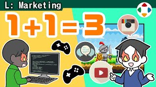
速览
新分类「宣传」讲的不是游戏本身，而是让人知道游戏的要素；樱井也广泛参与宣传，比如「樱井政博的○○」类视频也是宣传。游戏好、有趣是必要的，但一开始被广泛知道同样重要——不被知道就等于不存在。为了让辛苦做出的东西发挥作用，首先要让人知道这款游戏存在；为此需要宣传活动，广义上就是营业。可以说开发与宣传是同一根轴上的两个轮子，哪个转不好都不能直行。所以他积极做让人知道的活动：比如参战影片；斗士原画等游戏中需要的素材，也以会被单独观看、单独使用为前提来制作。现在也一定请对方提供宣传和运营相关的信息，需要提案时就积极提案；官方 Twitter、官方网站、通知的文字虽不是他写的，但他一定检查并提出建议。常被误会，他是总监不是制作人，但除了算钱以外的制作人业务也做了一大堆——可见他多么重视宣传（或者只是被方便地使唤）。开发与宣传是乘法：一方的成果与另一方的成果成比例。现在游戏多如山：据说 2021 年仅 Steam 上就发售了约 1 万款以上，加上家用机和手机还更多。要在其中被好好知道，需要相应的努力。不过在他的情况，主要是任天堂的宣传部门在努力，这点他很清楚；他也不太会在个人 Twitter 上一个劲儿刷通知——读的人会厌烦。但各种参战影片可以说是贡献很大的好宣传。吸引注目不一定都是好事，但也许「做过头一点刚刚好」。做开发的人也应积极思考如何被人知道。
1. 新分类：宣传 0:03
「宣传」这个新分类，讲的不是游戏本身，而是让人知道游戏的要素。樱井也广泛参与宣传，比如「樱井政博的○○」这类视频也是宣传。
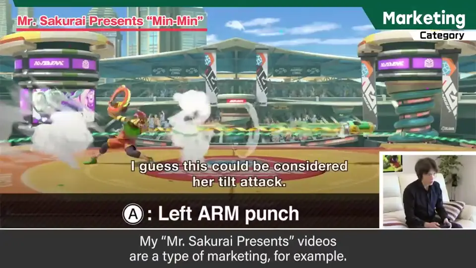
2. 不被知道就等于不存在 0:21
游戏好、有趣是必要的，但一开始被广泛知道同样重要。
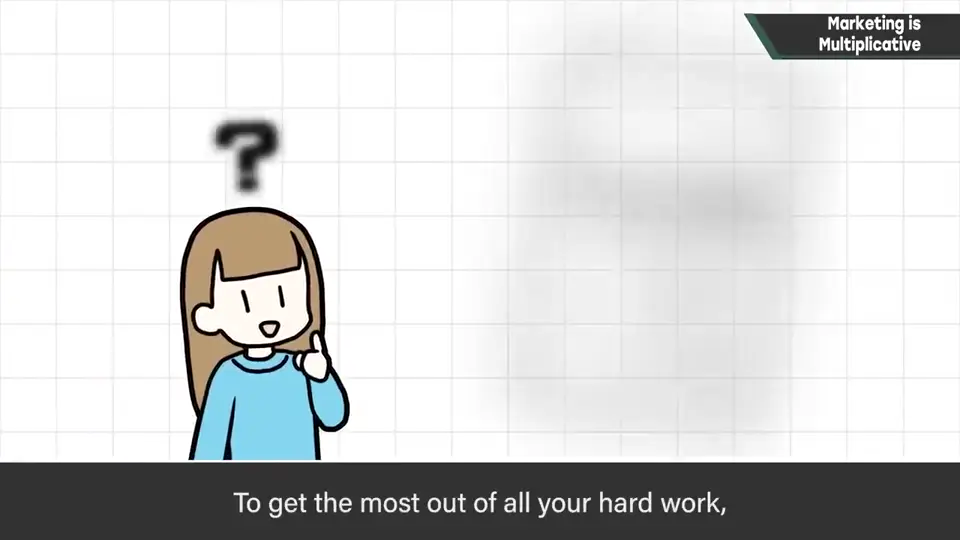
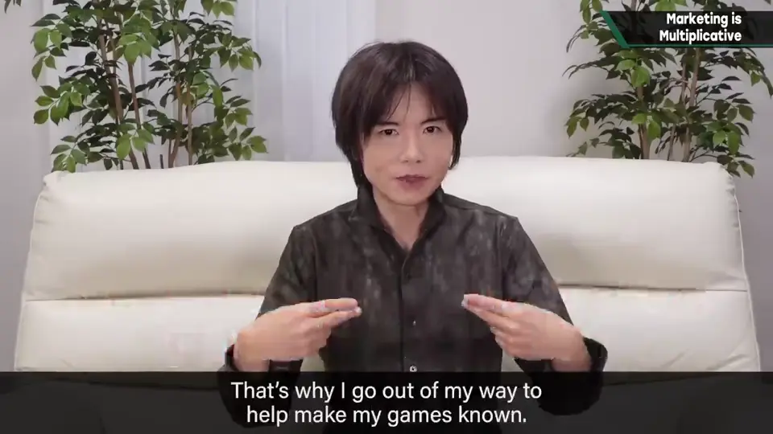
让游戏被人知道所需要的是宣传活动，广义上就是营业。
3. 樱井参与的宣传 0:57
所以他积极做让人知道的活动，比如参战影片。斗士原画等游戏里需要的素材，也以会被单独观看、单独使用为前提来制作。
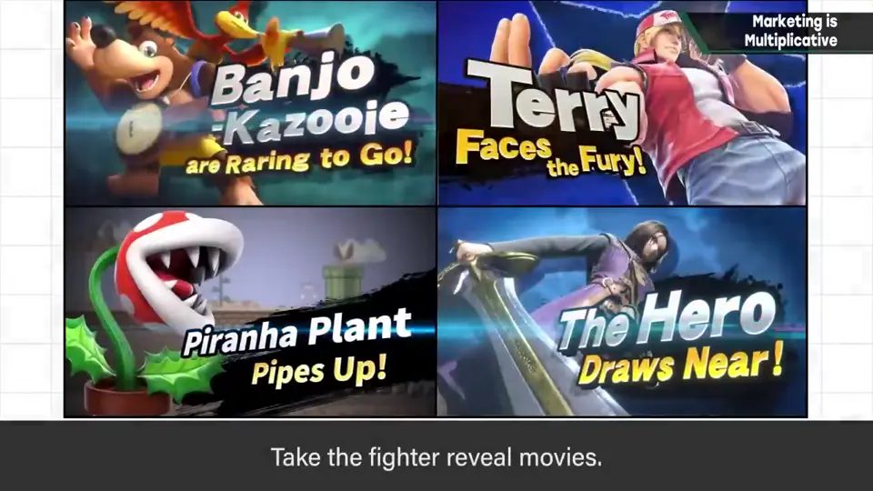
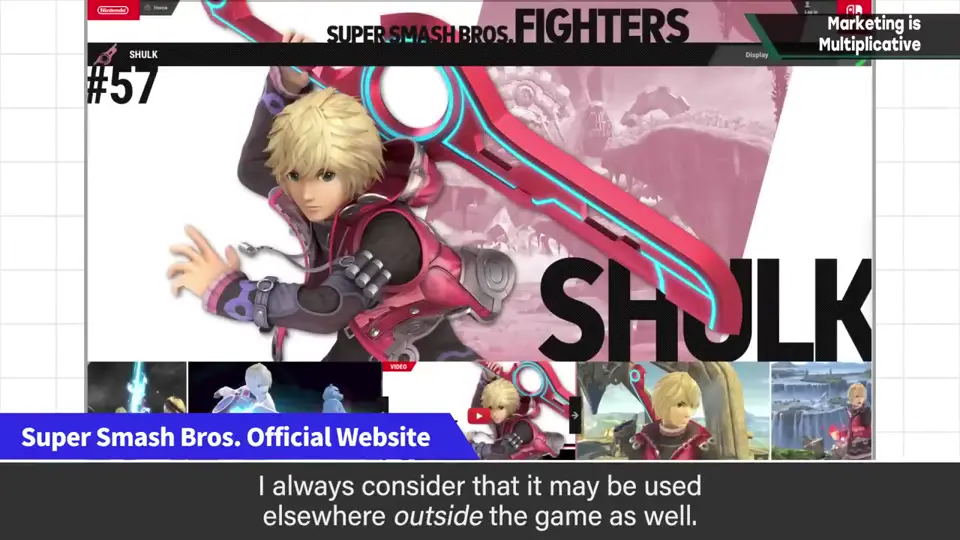
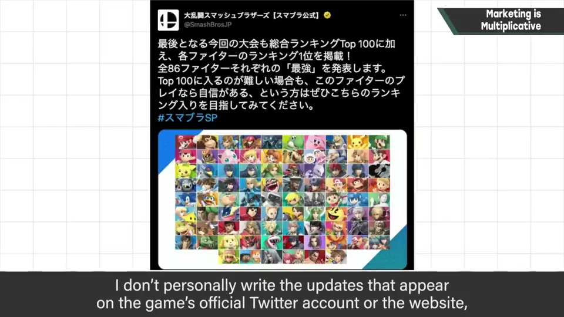
现在也一定请对方提供宣传和运营相关的信息，需要提案时就积极提案。官方 Twitter、官方网站、通知的文字虽然不是他写的，但他一定会检查，并提出建议。
常被误会，他是总监而不是制作人。但除了算钱以外，制作人的工作他也做了一大堆——可见有多重视。（或者只是被方便地使唤了？）
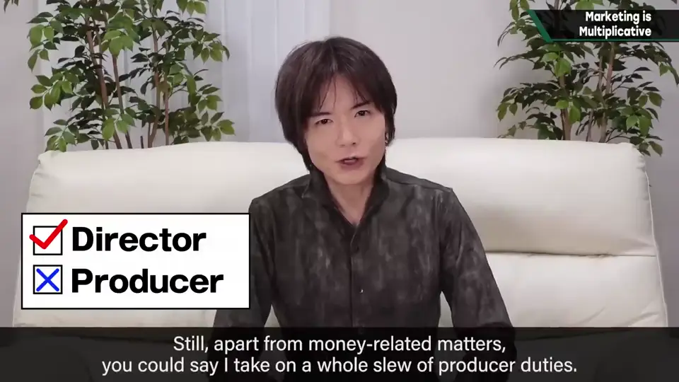
4. 开发 × 宣传 2:02
现在游戏多如山：据说 2021 年仅 Steam 上就发售了约 1 万款以上，加上家用机和手机游戏还会更多——谁都掌握不了。要在其中被好好知道，需要相应的努力。
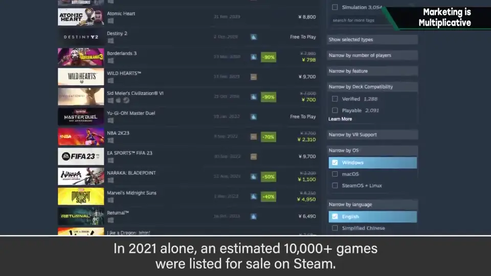
5. 分寸 2:30
不过在他的情况，主要是任天堂的宣传部门在努力，这一点他非常清楚。他也不太会在个人 Twitter 上一个劲儿地刷通知——读的人会烦。
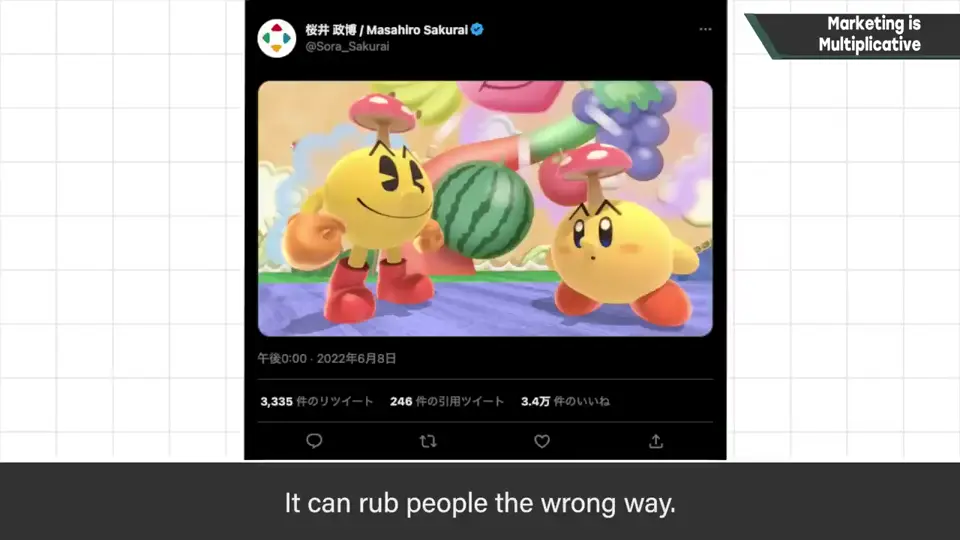
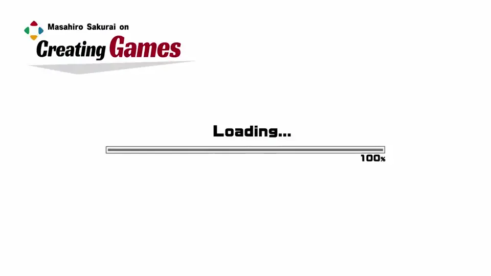
但各种参战影片，可以说是贡献很大的好宣传。吸引注目不一定都是好事，但也许「做过头一点刚刚好」。
自测题
1. 为什么樱井说「不被知道就等于不存在」？
游戏再好，没人知道它存在就无法发挥价值；被知道和好玩同等重要。 0:21
2. 「开发与宣传是乘法」是什么意思？
一方的成果与另一方成比例，哪一方为零都不行。 2:02
3. 樱井在宣传上具体做哪些事？
制作参战影片、以单独使用为前提做原画、检查官方推特/网站文案并提案等。 0:57